Vibe Designing：意图驱动的AI设计范式进化¶
过去几年，AI 像一道不断变化的光，照进了设计、艺术、互联网应用和产业的各个角落。
设计师们聊Prompt、LoRA、Workflow...不断学习新的工具、新的方法，也不断把这些能力带回自己的创作和业务现场。
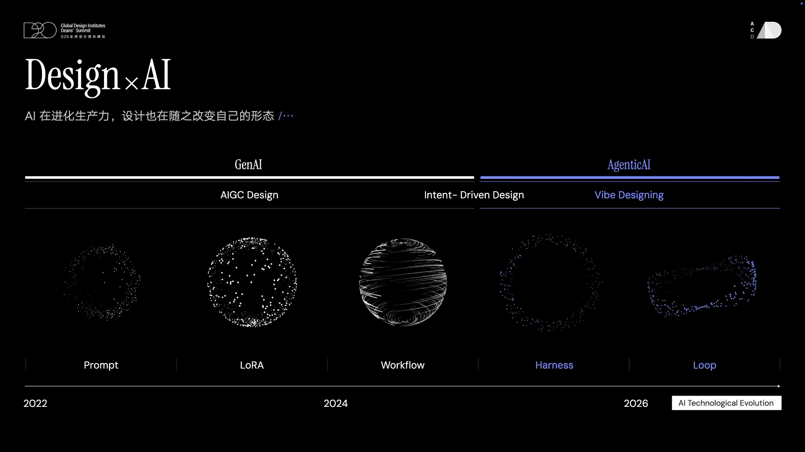
但回看最近这大半年，AI行业最重要的变化，无疑是对 AI Coding 的共识被改写了。
AI Coding 正在从开发者的专属能力，变成一种更普遍的创造能力：一个人可以用自然语言表达意图和判断，参与软件、工具、页面、体验和服务的创造。它不再只是程序员用于补全代码、生成测试、修复 bug 的工具，而开始进入产品、运营、教育、文化创新等更广泛的场景。
这件事对设计师意味着什么？不是“设计师也会写代码了”，而是，设计师终于可以更快地把脑子里的想法，变成可以运行、可以验证、可以被别人使用的东西。
这是一种生产力的变化，也是一种设计范式的变化。
一、AI Coding 正在成为通识性的创造能力¶
变化正悄然发生。
个人层面，阿里云的设计师借助 AI Coding 自己做了一个小工具，并发布到 npm平台，两天获得 150 多次下载。设计师不再只是等待工具，也可以为了解决自己的问题创造工具。
团队层面，阿里云设计中心开展了全员 Vibe Designing Jam 比赛，探索智能体优先的工作方式，涌现出40 多个参赛作品，覆盖产品设计、市场传播、体验度量等多个方向。AI Coding 进入设计现场之后，开始重新组织设计团队的工作流、重新发现业务创新机会。
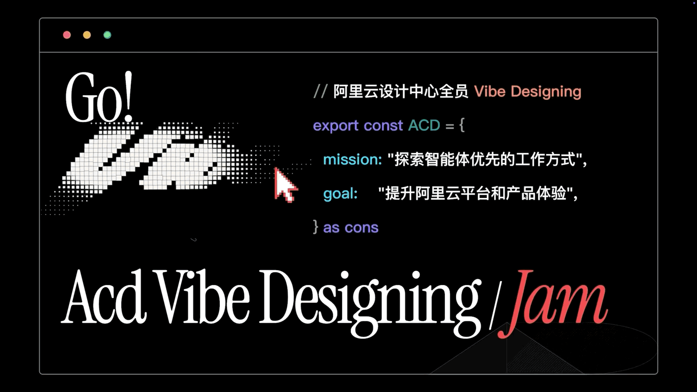
教育层面，浙江大学艺术与考古学院陈晓皎老师将 AI Coding 引入文化计算课程，带领学生们围绕傩文化、传统乐器等主题，把文化研究、视觉表达和交互体验连接起来，让原本停留在图像和文本中的文化内容，变成可以互动、可以运行、可以传播的数字作品。
这对艺术设计教育来说，是一个很大的变化。过去，很多学生可以想象一个互动体验，但要真正做出来，往往需要技术同学深度参与。现在，学生们在掌握 AI Coding 工具之后，能够让传统文化创造性转化，不再只停留在图像风格化，而有机会进入动态叙事、交互体验和数字系统的层面。
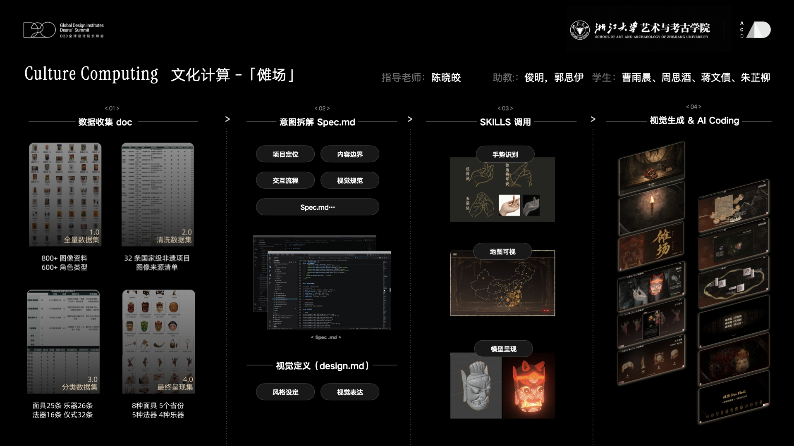
https://mp.weixin.qq.com/s/fKVXt6D3VW8ikS1XmW2J7g: https://mp.weixin.qq.com/s/fKVXt6D3VW8ikS1XmW2J7g
从一个设计师的小工具，到一个团队的工作方式，再到艺术设计教育的创作路径，AI Coding 正在成为一种通识性的创造能力。
二、意图驱动的AI设计新范式¶
技术平权之后，一个人说出意图，Agent 就有机会把它变成代码、界面、工具和产品。
但我们仍会遇到这样的问题，真正深入使用 AI Coding 工具时，Agent 并不天然懂我们的业务语境，也不天然懂我们的设计语言。我们反复跟它对话，告诉它这里不对、那里不对，但它生成的结果仍然容易像模板、像默认审美、没有具体的语境。
当意图可以被更快表达出来之后，谁来定义什么是好的体验？谁来把好的体验变成可持续生产的系统？谁来让 Agent 真正理解业务、理解文化、理解组件、理解审美和判断？
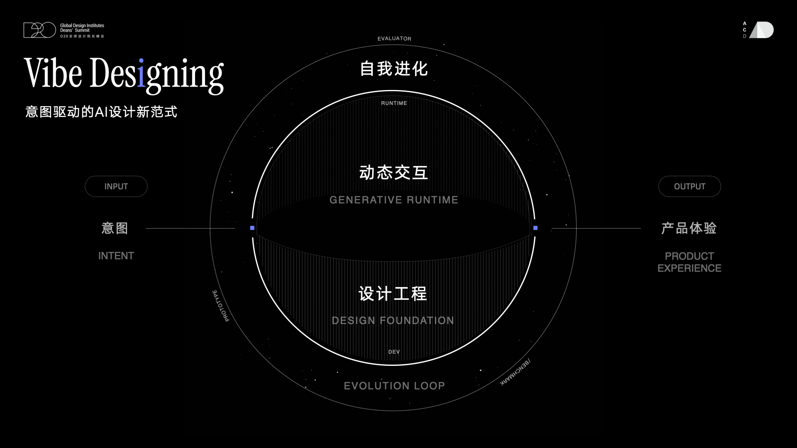
真正的问题是：一个意图如何被 Agent 高质量地实现为产品体验？
从意图到体验，中间不是一个 prompt，也不是一个模型，而是一套能力系统。设计师要从工具使用者，转向设计能力系统的构建者。在阿里云的实践中，这套能力系统被称为 CloudAI Design，它包含三个相互支撑的层面：
第一，设计工程 （Design Foundation）；
第二，动态交互 （Generative Runtime）；
第三，自我进化（Evolution Loop） 。
Design is the New Code.
三、设计工程，让设计能力进入Agent生成链路¶
设计工程，解决的是研发态和创作态的能力构建问题，把设计经验、组件规范、业务知识、文化素材、设计方法和验收标准转化为 Agent 可调用、可执行、可复用的工程资产，让 Agent 在生成产品体验或文化作品时不再裸生成，而是在真实语境和设计系统中生成。
所以，设计工程要做的第一件事，不是继续堆 prompt，而是主动打开 Agent 的黑盒，理解它到底是怎么生成的。如果这些过程都交给裸模型，它就会按照通用经验生成；但如果我们把设计能力工程化地提供给它，它就有机会按照我们的业务语义、组件体系和体验标准来生成。
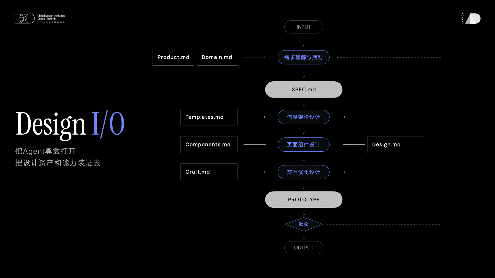
在 CloudAI 里，我们把设计工程拆成两类能力：
第一类是设计声明，回答什么是好的设计。它包括产品结构、业务语义、设计风格、交互逻辑、组件约束和通用体验原则，让 Agent 不再在抽象空间里生成，而是在真实的业务语境里生成。
第二类是执行契约，回答怎么做出好的设计。这就是设计工程的核心，我们不是让 Agent 自由发挥，而是把设计师的经验、流程和判断，变成Agent的能力。
在这样的体系里，设计声明控制质量，执行契约控制过程，设计不再只是一个交付物。设计开始成为一种新的工程能力。
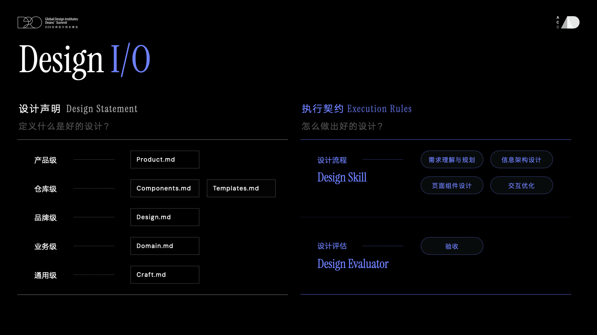
这套能力已经在阿里云AI Native产品研发中逐步应用，覆盖 Agent 构建、运维、观测、安全等商业化产品场景。Agent 可以读取 CloudAI 能力快速完成高质量 Baseline 设计，在更复杂的交互逻辑和高审美要求场景中，设计师则可以借助Figma MCP等工具基于 Agent 生成结果进行精修，并将新的规则、组件和经验回流到系统中。
Design is the new code.
设计能力正在进入工程现场，成为人与 Agent 共同构建产品的基础。
GenUI is the New Interface.
四、动态交互，体验随意图被实时组织¶
传统软件产品的交互和界面是预设好的，用户需要理解菜单在哪里，功能在哪里，路径怎么走，然后一步一步完成任务。而 AI Native 产品从“人如何理解系统”，转向“Agent 如何理解人的意图，并帮助人完成目标”，这一变化可以概括成从 UX 到 AX （Agent eXperience）的转变。
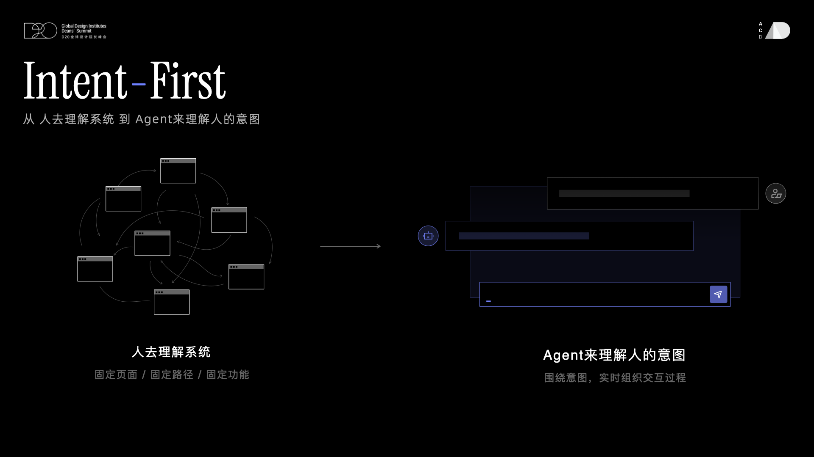
如果说设计工程更多发生在研发态，那么动态交互更多发生在产品运行态，解决的是运行态（Runtime）AX 体验问题，即 Agent 产品如何在用户表达意图之后，根据场景上下文，调用设计规则和组件动态组织一段交互过程，这就是 Generative UI。
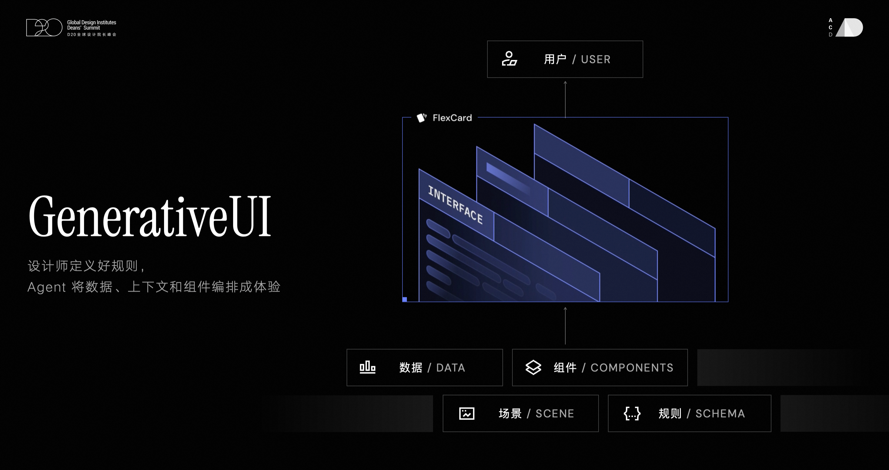
比如，一个用户想在云上部署机械臂训练模型。传统方式下，他需要理解平台入口、选择算法框架、配置算力资源、设置训练参数，再一步步完成部署。
但在 GenUI 场景中，用户只需要表达意图：我想训练一个机械臂模型。Agent 会结合平台能力、社区最佳实践和当前任务上下文，自动推荐合适的算法类型、训练方案和资源配置，并在关键节点生成临时界面，让用户确认、调整或继续推进。
这里的 UI 不再是一个固定页面，而是 Agent 为了完成当前任务，动态组织出来的过程界面。它把数据、流程、组件和规则临时组合起来，帮助用户更快抵达目标。
所以，GenUI is the New Interface，动态交互真正改变的是界面的存在方式。界面不再只是被设计出来，也可以在意图中被组织出来。
Taste is the New Engine.
五、自我进化，品味牵引设计张力¶
设计工程解决的是 Agent 如何理解我们的专业能力，动态交互解决的是 Agent 如何根据用户意图组织体验。但光有这两层能力，还不够。
今天大家使用 AI 时，都会有类似感受，它可以很快给出一个不错的 Baseline，但很多时候还需要我们一轮一轮地对话、纠正、补充，才能接近真正想要的结果。这个过程不应该长期依赖人的反复提醒。一个更理想的状态是，当意图表达出来之后，Agent 不仅能够完成生成，还能够主动发现问题、举一反三，并把体验继续往更好的方向推进。
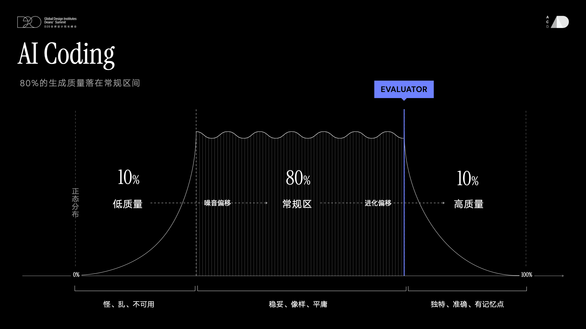
真正优秀的体验，仍然需要 Taste 牵引和质量兜底。
质量关注语义准确、场景合理、业务合规、交互可用和视觉一致；taste 则不仅是视觉审美，更包含对文化、叙事、产品气质和交互细节的综合判断。
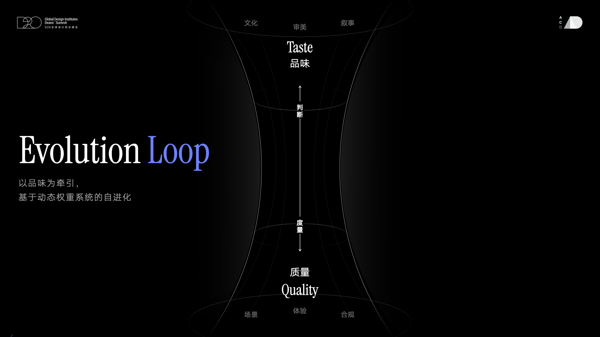
自我进化的关键，是把这些质量规则和 taste 判断沉淀为 Agent 可以执行的评价机制。生成完成之后，系统通过 evaluator 和体验巡检去验收效果，识别问题，提出修正，并将修正结果反哺到下一轮生成中。这样，Agent 才不只是一次性产出一个“还不错”的结果，而是能够推动体验从 baseline 逐步走向更成熟、更有张力的状态。
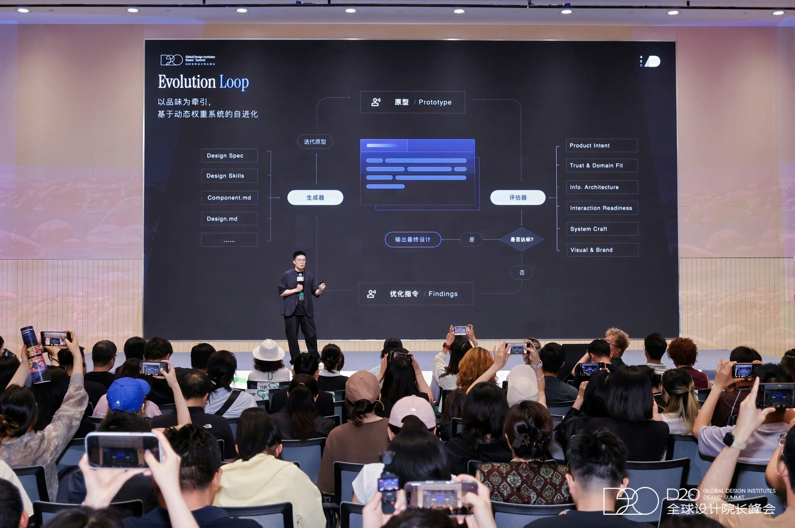
这不是把审美机械化，而是让 Agent 能够在反馈中逐渐理解：什么只是完整，什么才是真正好的体验。
Taste is the new engine.
从一次生成到自我进化，品味会成为牵引体验持续向上生长的力量。
六、设计师仍然用作品说话，只是作品的形态变了¶
在 AI 时代，设计师当然仍然要用作品说话。只是今天的作品，可能不再只是一张静态图，也不再只是一个 Figma 文件。它可能是一个可以交互的动态网站，可能是一套可以被 Agent 调用的 Design skill，可能是一组能持续巡检体验质量的 evaluator，也可能是一套把业务数据、组件和规则组织成体验的 Runtime 机制。
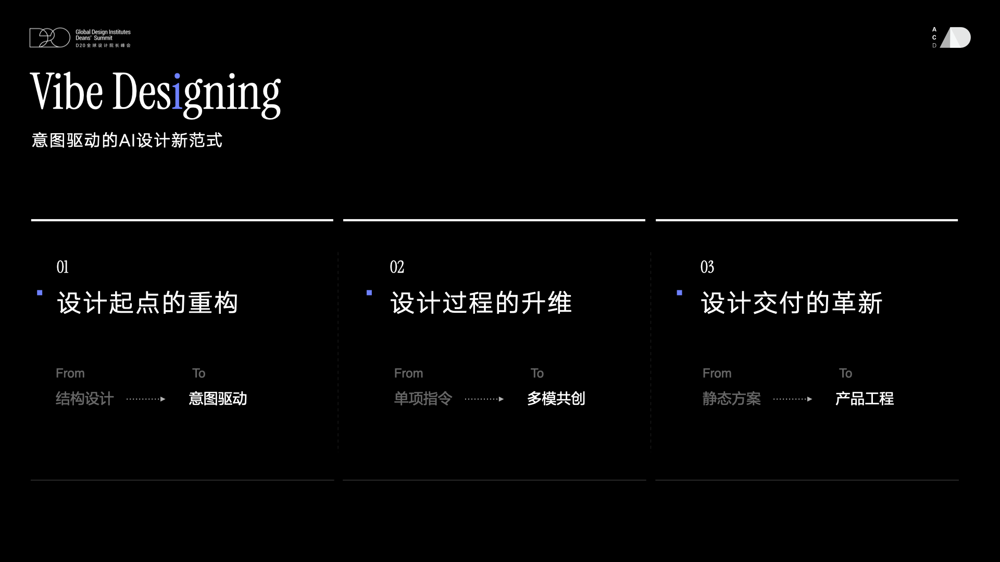
所以，Go VibeDesigning 不是简单地用 AI 生成界面。
它真正要回答的是：当 Vibe Coding 让更多人可以把意图变成结果之后，设计师如何让这些结果成为高质量的产品体验。
AI 不是设计的未来，但 AI 一定正在塑造未来的设计。真正的机会，是把我们的专业能力、业务理解、审美判断和创造方法，变成 Agent 时代新的设计基础设施。